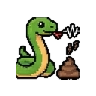

SNEKBYTENUXEL ARCADE // WoNQ EDITION
SCORE0
BEST0
SPEED12
STATUSREADY
POOP-O-METER
0 / 5
Game rules are ported from the included Python/Pygame source. Settings and high score stay on this device.
Swipe on the board, press the D-pad, or use your keyboard's arrow/WASD keys. Eat red food to grow. Avoid walls, your body and poop piles.
Poop-o-meter: In WoNQ Mode, every fifth food drops a persistent brown obstacle at the tail. A collision ends the game.
Controls: Space pauses, Escape/Back pauses or closes an open dialog. Locking the phone or leaving the app automatically pauses the game.